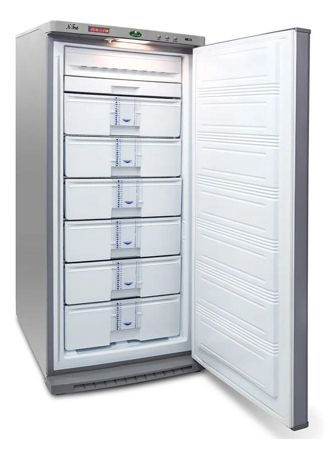
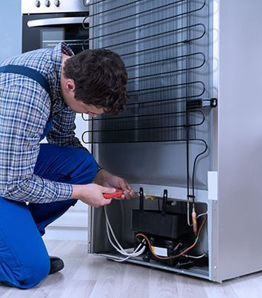

الديب فريزر يحفظ كميات كبيرة من الطعام لفترات طويلة، وأي عطل فيه قد يعني خسارة مخزون كامل. يقدّم فنيو خدماتي صيانة وإصلاح الديب فريزر بنوعيه الأفقي (الصندوقي) والرأسي، من ضعف التجميد والكمبروسر إلى الفريون وتجمّع الثلج وجوان الغطاء.


خدمات الديب فريزر
اختر المشكلة التي تواجهها لتقرأ التفاصيل.
الديب فريزر لا يجمّد
ضعف أو انعدام التجميد؟ نفحص الثرموستات والكمبروسر والغاز ونعالج السبب.
التفاصيلالكمبروسر (الضاغط)
فحص الكمبروسر وملحقاته، وتغييره عند الحاجة فقط مع تفريغ وتعبئة الغاز.
التفاصيلتعبئة الفريون
نكشف موضع التسريب ونصلحه ثم نعبّئ الغاز المناسب بالكمية الصحيحة.
التفاصيلالثلج الزائد وتسريب المياه
ثلج سميك أو مياه عند الإذابة؟ نعالج السبب ونفحص مصرف التصريف والجوان.
التفاصيلجوان الغطاء والباب
غطاء لا يُغلق بإحكام وثلج على الحواف؟ نغيّر الجوان ونضبط المفصلات.
التفاصيلالثرموستات والإنذار
درجة حرارة غير مضبوطة أو إنذار لا يتوقف؟ نفحص الثرموستات وسويتشات التحكم.
التفاصيلصيانة دورية وتنظيف
فحص وتنظيف شامل للمكثف والجوان والمصرف لإطالة عمر الفريزر.
التفاصيلهل تلاحظ شيئًا من هذا؟
- الديب فريزر لا يجمّد كما يجب
- الطعام يذوب جزئيًا أو يتكوّن عليه ثلج غير معتاد
- الكمبروسر يعمل باستمرار أو لا يعمل
- مياه تتجمع أسفل الفريزر بعد الإذابة
- صوت عالٍ أو اهتزاز أثناء التشغيل
- الغطاء أو الباب لا يُغلق بإحكام
كيف تحافظ على الديب فريزر
عادات بسيطة تطيل عمر جهازك وتقلل الأعطال.
لا تفتح الغطاء بلا داعٍ
كل فتح يُدخل هواءً دافئًا ورطبًا يزيد الثلج والحمل على الكمبروسر.
غلّف الأطعمة جيدًا
التغليف يمنع حروق التجميد ويقلل تكوّن الثلج.
أذب الثلج عند تراكمه
الثلج السميك يقلل الكفاءة ويرفع استهلاك الكهرباء.
اترك مسافة تهوية
تهوية الكمبروسر والمكثف تحميانه من الحرارة الزائدة.
نظّف المكثف من الغبار
مرتين في السنة تقريبًا للحفاظ على كفاءة التبريد.
اتصل بالفني فورًا إذا لاحظت:
- الطعام يذوب أو لا يتجمد
- إنذار الحرارة مضاء باستمرار
- الكمبروسر يعمل بلا توقف أو لا يعمل
- مياه أو ثلج غير معتاد حول الفريزر
ماركات الديب فريزر التي نتعامل معها
- بيكو
- إل جي
- سامسونج
- توشيبا
- شارب
- هيتاشي
- هاير
- فريش
- يونيون إير
- كريازي
- يونيفرسال
- إلكترولوكس
- أريستون
- زانوسي
أسماء الماركات ملك لأصحابها، وذكرها هنا للدلالة على أنواع الأجهزة التي نتعامل معها ولا يعني أننا وكلاء معتمدون لها.
أسئلة حول الديب فريزر
ماذا أفعل بالطعام إذا تعطل الديب فريزر؟
أبقِ الغطاء مغلقًا قدر الإمكان فهو يحفظ البرودة لساعات، وانقل الأطعمة إلى مكان بارد إن طال الانتظار، ولا تعيد تجميد ما ذاب بالكامل.
هل تصلحون الديب فريزر الأفقي والرأسي؟
نتعامل مع النوعين، وعند الاتصال أخبرنا بالنوع والماركة والموديل لنتجهّز بالقطع المناسبة.
ما المعلومات التي أحتاجها عند الاتصال؟
اذكر نوع الفريزر وماركته وموديله إن أمكن، مع وصف العطل وعنوانك.
عندك عطل في جهازك؟ كلّمنا الآن
فنيونا جاهزون لتحديد موعد زيارة يناسبك. نستقبل اتصالاتك على مدار الساعة.